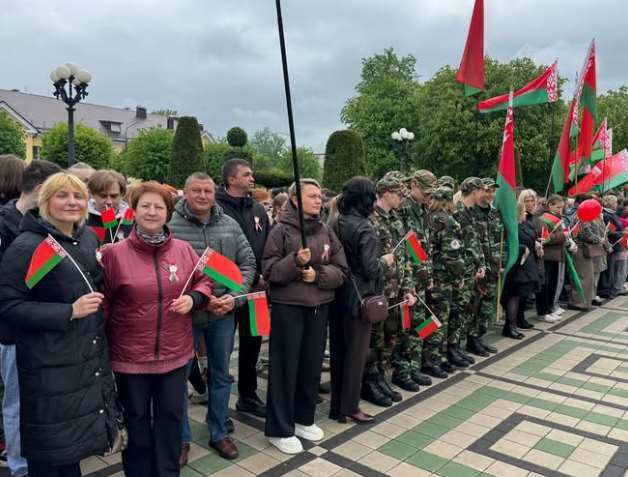
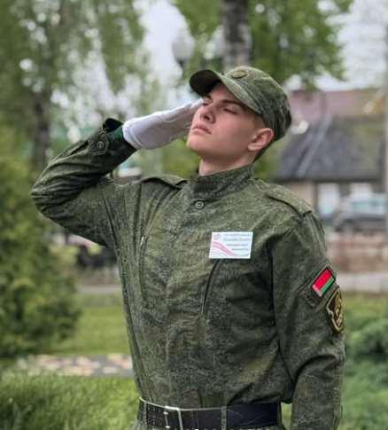

ТОРЖЕСТВЕННОЙ ЦЕРЕМОНИИ ЧЕСТВОВАНИЯ ГОСУДАРСТВЕННЫХ СИМВОЛОВ РЕСПУБЛИКИ БЕЛАРУСЬ
10 мая делегация нашей гимназии приняла участие в торжественной церемонии чествования государственных символов Республики Беларусь!

Это особенный день, когда вся страна объединяется, чтобы выразить уважение главным атрибутам нашего суверенитета – Флагу, Гербу и Гимну. Для нас это не просто мероприятие, а настоящий урок патриотизма и гражданственности!
Право поднять Государственный флаг Республики Беларусь было доверено учащемуся нашей гимназии Степану Линнику и учащейся школы №22 Ксении Лютарович!

Степан Линник является достойным представителем нашей гимназии, знаменщиком знамённой группы гимназии, командиром военнопатриотического клуба «Юнармеец», призёр районного Слёта юных патриотов, победителем военно-патриотических игр «Зарница» и «Орлёнок».